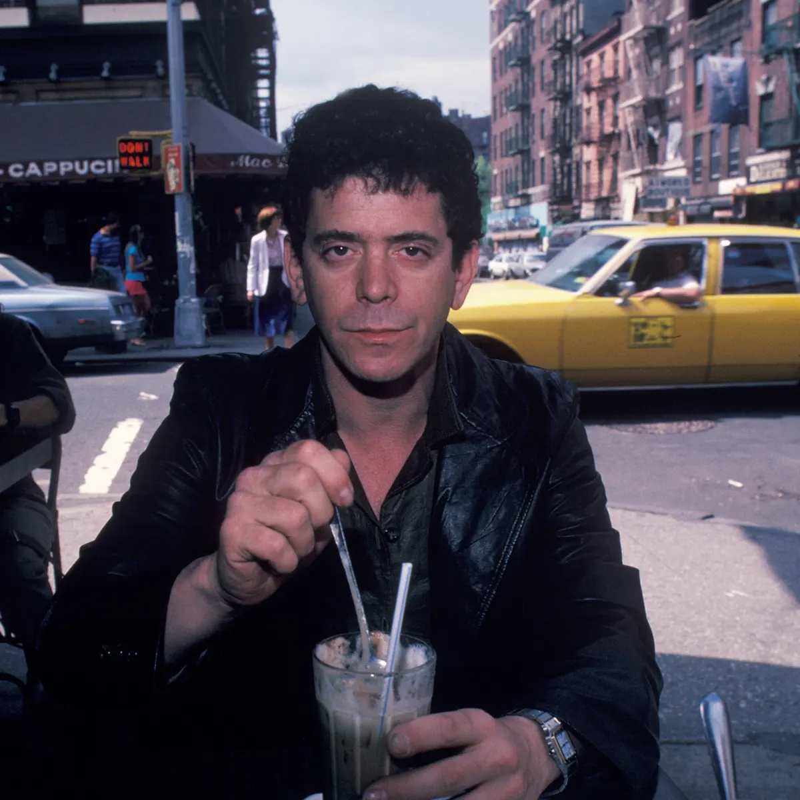
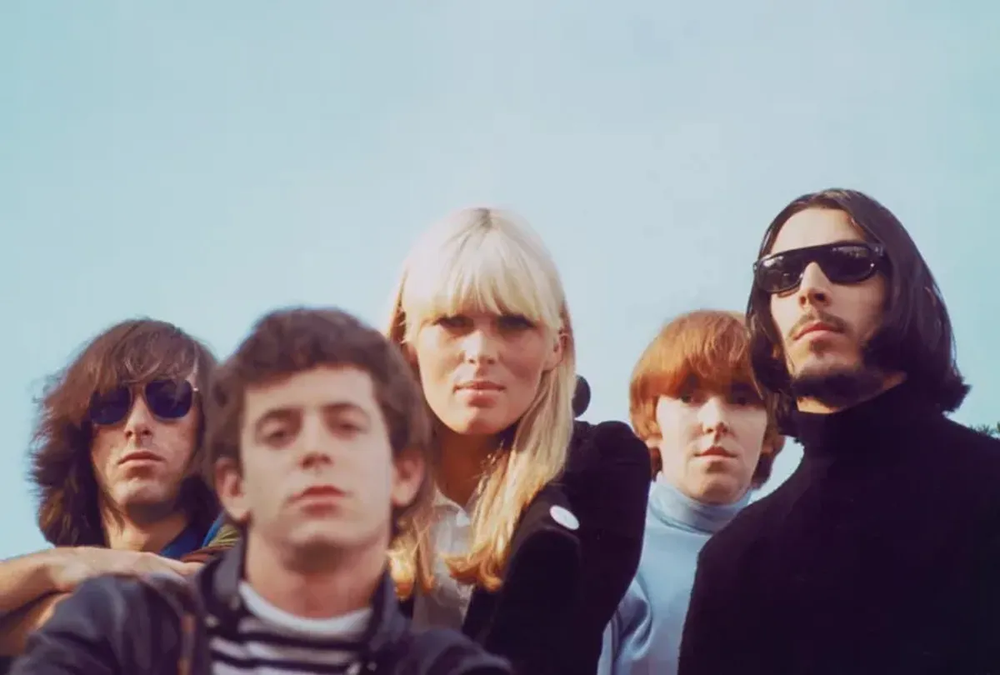

About Me
Lewis Allan Reed (March 2, 1942 – October 27, 2013) was an American musician, songwriter, and poet. He was the guitarist, singer, and principal songwriter for the rock band the Velvet Underground and had a solo career that spanned five decades. Although not commercially successful during its existence, the Velvet Underground became regarded as one of the most influential bands in the history of underground and alternative rock music. Reed's distinctive deadpan voice, poetic and transgressive lyrics, and experimental guitar playing were trademarks throughout his long career.
Having played guitar and sung in doo-wop groups in high school, Reed studied poetry at Syracuse University under Delmore Schwartz, and had served as a radio DJ, hosting a late-night avant garde music program while at college. After graduating from Syracuse, he went to work for Pickwick Records in New York City, a low-budget record company that specialized in sound-alike recordings, as a songwriter and session musician. A fellow session player at Pickwick was John Cale; together with Sterling Morrison and Angus MacLise, they would form the Velvet Underground in 1965. After building a reputation on the avant garde music scene, they gained the attention of Andy Warhol, who became the band's manager; they in turn became something of a fixture at The Factory, Warhol's art studio, and served as his "house band" for various projects. The band released their first album, now with drummer Moe Tucker and featuring German singer Nico, in 1967, and parted ways with Warhol shortly thereafter. Following several lineup changes and three more little-heard albums, Reed quit the band in 1970.
After leaving the band, Reed would go on to a much more commercially successful solo career, releasing twenty solo studio albums. His second, Transformer (1972), was produced by David Bowie and arranged by Mick Ronson, and brought him mainstream recognition. The album is considered an influential landmark of the glam rock genre, anchored by Reed's most successful single, "Walk on the Wild Side". After Transformer, the less commercial but critically acclaimed Berlin peaked at No. 7 on the UK Albums Chart. Rock 'n' Roll Animal (a live album released in 1974) sold strongly, and Sally Can't Dance (1974) peaked at No. 10 on the Billboard 200; but for a long period after, Reed's work did not translate into sales, leading him deeper into drug addiction and alcoholism. Reed cleaned up in the early 1980s, and gradually returned to prominence with The Blue Mask (1982) and New Sensations (1984), reaching a critical and commercial career peak with his 1989 album New York.
Reed participated in the re-formation of the Velvet Underground in the 1990s, and he made several more albums, including a collaboration album with John Cale titled Songs for Drella, which was a tribute to their former mentor Andy Warhol. Magic and Loss (1992) would become Reed's highest-charting album on the UK Albums Chart, peaking at No. 6
He contributed music to two theatrical interpretations of 19th-century writers, one of which he developed into an album titled The Raven. He married his third wife Laurie Anderson in 2008, and recorded the collaboration album Lulu with Metallica. He died in 2013 of liver disease. Reed has been inducted into the Rock and Roll Hall of Fame twice: as a member of the Velvet Underground in 1996 and as a solo act in 2015.
If you want to read more about me Click Here
My Photos
Those are my first seven solo albums:
Those are my albums with the Velvet Underground:
Some pic of me and the Velvet Underground:
 
My Playlist
Those are my best live songs
Like
Give me a likeQR Code
Q&A
Q1- What are the main differences between web1, web2 and web 3
Web1, Web2, and Web3 are the different stages of the evolution of the World Wide Web.
Web1 was the earliest version of the internet, which was mostly a collection of static websites with limited user interaction. It was primarily used for sharing information and displaying content, and there was no easy way to share or collaborate on content. Web1 was prevalent from the early 1990s to the mid-2000s.
Web2 emerged in the mid-2000s and is characterized by a more dynamic and interactive web experience. Web2 introduced social networking, user-generated content, and cloud computing. This allowed users to create and share content, collaborate with others, and interact with websites in more meaningful ways. Web2 also saw the rise of mobile devices, which further increased the demand for responsive web design.
Web3 is the next stage of the evolution of the web, which is still in its early stages. Web3 is all about decentralization and the use of blockchain technology to create a more secure and transparent internet. Web3 is intended to be a more open and fairer internet, where users have more control over their data and can interact with each other without intermediaries. Web3 technologies include decentralized apps, blockchain-based smart contracts, and peer-to-peer networks.
In summary, the main differences between Web1, Web2, and Web3 are:
Web1 was primarily focused on static content, while Web2 introduced dynamic and interactive content.
Web2 introduced user-generated content, social networking, and cloud computing.
Web3 is focused on decentralization and blockchain technology, with a goal of creating a more open and fairer internet.
Q2- explain the difference by example of use case
Let's take the example of online shopping to show how it has evolved from Web1 to Web3.
Web1: In the early days of the internet, online shopping was very basic. Websites were static and offered limited functionality. Customers could view a list of products with some basic information, but there was no way to interact with the website or customize the shopping experience. The checkout process was also very basic, with limited payment options and no tracking of orders.
Result: Customers had a limited and unsatisfactory shopping experience, with little control over the purchasing process. Merchants had limited ways to interact with customers and track their behavior.
Web2: With the rise of Web2, online shopping became more dynamic and interactive. Merchants could now create personalized shopping experiences for customers, offering recommendations based on their browsing history and purchase behavior. Social media integration also became common, allowing customers to share their shopping experience with friends and family.
Result: Customers had a more engaging and personalized shopping experience, with greater control over the purchasing process. Merchants could interact with customers in more meaningful ways, building brand loyalty and increasing sales.
Web3: With Web3, online shopping is expected to become even more decentralized and transparent. Customers will have greater control over their data and privacy, and will be able to earn rewards for their loyalty and engagement. Merchants will be able to create more customized shopping experiences, with the ability to create smart contracts for payment and delivery.
Result: Customers will have a more secure and transparent shopping experience, with greater control over their data and privacy. Merchants will be able to create more efficient and cost-effective supply chains, with greater trust and transparency between buyers and sellers.
Contact Me
You can contact me in the section below: